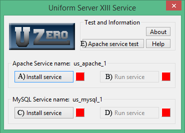

|
|
Run as a service |
After installing module ZeroXIII_uniservice_2_2_0 folder UniServerZ contains a file UniService.exe running this file opens the Uniform Server Service application. This application allows you to install and run The Uniform Server as a service.
NOTE: For Win7 and Win8, admin privileges are required. When prompted click yes allow changes to this computer.
Install module (plugin)
Install The Uniform Server service plugin as follows:
- Download ZeroXIII_uniservice_2_2_0.exe module (plugin)
- Copy ZeroXIII_uniservice_2_2_0.exe module (plugin) to folder UniServerZ
- Double click on the downloaded module
- This starts the extraction process
- If requested allow overwriting of existing files.
- If you wish to save space delete file ZeroXIII_uniservice_2_2_0.exe
- Folder UniServerZ now contains two new files:
- UniService.exe - Service Application
- ZeroXIII_unservice_read_me.txt - Contains additional informs
Warning
The Uniform Server Service application and UniController are independent applications this means there is no interaction between the two. Use only one or other to control the servers as follows:
- Very important.
- Ensure servers have been configured correctly and correct operation has been confirmed by running as a standard application using Unicontroller.
- Before installing and running servers as a service.
- Ensure servers are stopped and UniController is closed.
- After installing and running servers as a service do not use UniController to control servers.
- Before using UniController stop and uninstall services.
Uniform Server Service application
When using this application, you install the servers as services; it adds data to your operating system’s registry. The advantages of running as a service, when you restart your PC, servers’ will automatically re-start. You can install and run services from a USB memory stick however, you must remember to stop and uninstall services before removing your USB stick.
Buttons (A,B) and (C,D) provide independent control of Apache and MySQL servers respectively.
|
 |
Apache service test
Errors in Apache configuration files will prevent Apache running as a service. After making changes to configuration files ensure the servers function correctly when run as a standard program. After testing stop servers, close UniController and start UniService. Click Apache service test button E).
Apache service test performs the following:
- 1) Open a command window
- 2) Check configuration files exist
- 3) Create back-up folder and copy files
- 4) Check all back-up files exist
- 5) Replace variables with absolute paths.
- 6) Install Apache service
- 7) Performs Apache configuration test
- 8) Uninstall Apache service.
- 9) Restore original files from back-up.
- 10) Delete back-up files and folder.
Closing above command window returns to the Service Utility UniService.
Errors reported must be corrected before the service can be installed and started from the UniServer Service Utility.
Operation overview
The following provides an operation overview of the service application:
Install service
Apache
- Clicking button A initiates a backup of the following configuration files:
- httpd.conf
- httpd-autoindex.conf
- httpd-dav.conf
- httpd-default.conf
- httpd-deflate.conf
- httpd-info.conf
- httpd-languages.conf
- httpd-manual.conf
- httpd-mpm.conf
- httpd-multilang-errordoc.conf
- httpd-proxy-html.conf
- httpd-sni.conf
- httpd-ssl.conf
- httpd-userdir.conf
- httpd-vhosts.conf
- php_production.ini - Selected configuration file
- php-cli.ini
- proxy-html.conf
- A backup folder C:\UniServerZ\core\service_back_ap is created if it does not exist and the above configuration files copied to it.
- Relative paths within original configuration files are converted to absolute paths.
- Note: Because servers now use absolute paths they are no longer portable.
- Following command line is executed installing the Apache service:
- Button A: C:\UniServerZ\core\apache2\bin\httpd_z.exe -k install -n "us_apache_1"
- Button text toggle state:
- Button A: Text Install service changes to UnInstall service.
- Indicator toggles state:
- Changes from red (not installed as service) to green (installed as service).
- Button B Run service is enabled.
MySQL
- Clicking button C initiates a backup of the following configuration file:
- my.ini
- A backup folder C:\UniServerZ\core\service_back_my is created if it does not exist and the above configuration file copied to it.
- Relative paths within original configuration file are converted to absolute paths.
- Note: Because servers now use absolute paths they are no longer portable.
- Following command line is executed installing the MySQL service:
- Button C: C:\UniServerZ\core\mysql\bin\bin\mysqld_z.exe --install "us_mysql_1" --defaults-file=C:/UniServerZ/core/mysql/my.ini
- Button text toggle state:
- Button C: Text Install service changes to UnInstall service.
- Indicator toggles state:
- Changes from red (not installed as service) to green (installed as service).
- Button D Run service is enabled.
Run service
Apache
- Clicking enabled button B runs the service by executing the following command line:
- Button B: C:\UniServerZ\core\apache2\bin\httpd_z.exe -k start -n "us_apache_1"
- Button text toggle state:
- Button B: Text Run service changes to Stop service.
- Indicator toggles state:
- Changes from red (service not running) to green (service running).
- Buttons A UnInstall service is disabled.
MySQL
- Clicking enabled button D runs the service by executing the following command line:
- Button D: sc.exe start "us_mysql_1"
- Button text toggles state:
- Button D: Text Run service changes to Stop service.
- Indicator toggle state:
- Changes from red (service not running) to green (service running).
- Buttons C UnInstall service is disabled.
Stop service
Apache
- Clicking enabled button B stops the service by executing the following command line:
- Button B: C:\UniServerZ\core\apache2\bin\httpd_z.exe -k stop -n "us_apache_1"
- Button text toggles state:
- Button B: Text Stop service changes to Run service.
- Indicator toggles state:
- Changes from green (service running) to red (service not running).
- Buttons A UnInstall service is enabled.
MySQL
- Clicking enabled buttons D stops the service by executing the following command line:
- Button D: sc.exe stop "us_mysql_1"
- Button text toggles state:
- Button D: Text Stop service changes to Run service.
- Indicator toggles state:
- Changes from green (service running) to red (service not running).
- Buttons C UnInstall service is enabled.
Uninstall service
Apache
- Clicking button A the following command line is executed uninstalling the service:
- Button A: C:\UniServerZ\core\apache2\bin\httpd_z.exe -k uninstall -n "us_apache_1"
- Button text toggles state:
- Button A: Text UnInstall service changes to Install service.
- Indicators toggle state:
- Changes from green (installed as service) to red (not installed as service).
- Buttons B Run service is disabled.
- Following configuration files are restored to their original location:
- httpd.conf
- httpd-autoindex.conf
- httpd-dav.conf
- httpd-default.conf
- httpd-deflate.conf
- httpd-info.conf
- httpd-languages.conf
- httpd-manual.conf
- httpd-mpm.conf
- httpd-multilang-errordoc.conf
- httpd-proxy-html.conf
- httpd-sni.conf
- httpd-ssl.conf
- httpd-userdir.conf
- httpd-vhosts.conf
- php_production.ini - Selected configuration file
- php-cli.ini
- proxy-html.conf
- Backup folder C:\UniServerZ\core\service_back_ap is deleted.
- Note: Original configuration files use relative paths. Servers are now portable and can be moved.
MySQL
- Clicking buttons C following command line is executed uninstalling the MySQL service:
- Button C: C:\UniServerZ\core\mysql\bin\bin\mysqld_z.exe --remove "us_mysql_1"
- Button text toggles state:
- Button C: Text UnInstall service changes to Install service.
- Indicator toggles state:
- Changes from green (installed as service) to red (not installed as service).
- Button D Run service is disabled.
- Following configuration file is restored to its original location:
- Backup folder C:\UniServerZ\core\service_back_my is deleted.
- Note: Original configuration files use relative paths. Servers are now portable and can be moved.
-
my.ini
Change service names
Service names are changeable by editing file C:\UniServerZ\home\us_config\us_config.ini
- Locate section [SERVICE]
- Change the following lines as appropriate:
- MySQLServiceName=us_mysql
- ApacheServiceName=us_apache